1. T스핀 정보
T스핀은 간단히 말하자면 T미노의 회전을 이용해서 줄을 없애는 것을 말합니다.
2001년에 나온 '테트리스 가이드라인'을 지키는 게임들은 거의 이 규칙이 적용됩니다. 2005년에 나온 'Tetris DS' 이후 지금의 형태로 굳어졌습니다. 영어 사이트에서는 이걸 "3-corner T"라고 부릅니다. 1. 줄을 없애기 직전 T미노의 동작이 회전이어야 하고2. 마지막에 T미노를 둘러싼 네 개의 모서리 중, 적어도 세 개가 차 있어야 합니다. 아래 그림에서 1,2,3,4 중 세 개가 차 있어야 한다는 이야기입니다.
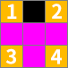
T스핀은 일반적으로 줄을 없애는 방법에 비해 공격력이 강합니다.
싱글 : 0더블 : 1
트리플 : 2
테트리스 : 4
T스핀 미니 : 0
T스핀 싱글 : 2
T스핀 더블 : 4
T스핀 트리플 : 6
백투백 : +1
위 데미지를 보면 T스핀으로 3줄을 제거 하면 I미노로 4줄을 제거한 것보다 공격력이 강하기 때문에 T스핀을 이용하면 적은 줄로 많은 공격을 할 수 있습니다.
2. T스핀 미니
백투백 보너스는 있지만 T스핀 공격 보너스는 없는 T스핀입니다. 양쪽 벽 또는 미노 벽이 있어야 사용 가능합니다.
회전 방향은 화살표로 나타냈는데, 기본 설정에서는 시계방향이 X, 반시계방향이 Z입니다. 회전 방향이 정해져 있으니 꼭 지키셔야 합니다.
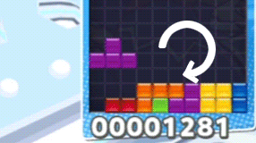
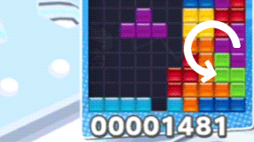
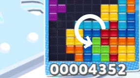
참고로 아래 그림처럼 벽 높이가 두 칸인 상황은 T스핀 판정이 없습니다.
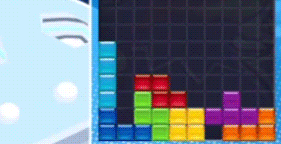
위에서 T스핀 미니는 공격력이 0이라고 했는데 왜 사용하는지 궁금하실 수 있습니다.
1. 게임에 따라서는 T스핀 미니에도 공격력이 있음테트리스 게임이 많이 있는데, 그 중에서는 T스핀 미니에도 공격력을 붙여 주는 경우가 있습니다. 공격력이 1인 경우가 있고, T스핀 싱글과 똑같이 취급하는 경우도 있습니다. 2. 백투백 보너스를 받고 싶을 때
지금 백투백 보너스가 없는 상황이지만 다음에 T스핀이나 테트리스를 쓸 예정이라면, T스핀 미니를 미리 써 놓음으로써 다음 공격에 보너스 공격력 +1을 붙일 수 있습니다. 3. 백투백 보너스로 공격을 하고 싶을 때
T스핀 미니를 쓰기 전에 T스핀이나 테트리스를 쓴 상황이라면, T스핀 미니에도 백투백 보너스가 붙습니다. 그러면 백투백(+1) T스핀 미니(+0)의 공격력도 1이 됩니다. 상대가 테트리스라면 쓰레기 줄이 한 줄 생길 것이고, 상대가 뿌요라면 방해 뿌요를 4개 받을 것입니다. 특히 뿌요는 방해 뿌요를 받는 동안에 다른 행동을 못 하기 때문에, 상대가 뿌요라면 T스핀 미니도 적극적으로 활용하는 것이 좋습니다. 4. T스핀 미니를 이용해 T스핀 형태를 만들 때
아래 그림을 보시면 이해가 될 것입니다. 왼쪽 그림에서 T스핀 미니를 쓰면 오른쪽 그림처럼 되는데, 이렇게 T스핀을 사용할 수 있습니다.
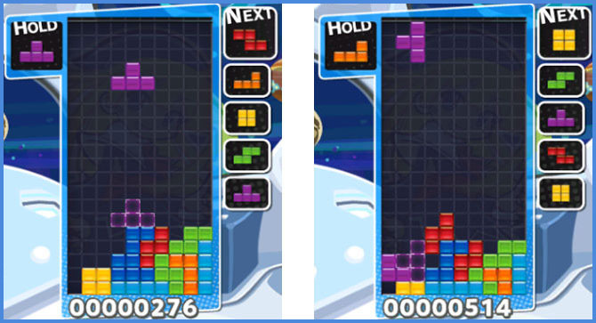
3. T스핀 싱글
T스핀을 이용해 1줄을 없애는 기술입니다.
회전 방향은 화살표로 나타냈는데, 기본 설정에서는 시계방향이 X, 반시계방향이 Z입니다. 회전은 다른 방향으로 해도 되지만, 그림에 표시된 방향이 효율적입니다.
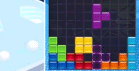
4. T스핀 더블
T스핀으로 두 줄을 없애는 기술입니다. 실전에서 가장 많이 사용하는 형태입니다.
십자가 부분에 넣고 돌려도 되고, 벽이 있다면 밀어 넣는 방식도 됩니다. 아래 그림을 보고 몇 번 따라해보시면 되겠습니다. 회전 방향은 화살표로 나타냈는데, 기본 설정에서는 시계방향이 X, 반시계방향이 Z입니다. 첫 번째 그림의 회전은 다른 방향으로 해도 되지만, 그림에 표시된 방향이 효율적입니다. 두 번째 그림은 회전 방향이 정해져 있습니다.
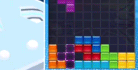
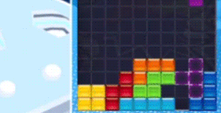
5. T스핀 트리플
T스핀으로 세 줄을 없애는 기술입니다. 역시 실전에서 많이 사용됩니다. T미노를 걸칠 지붕이 반드시 있어야 합니다.
회전 방향은 화살표로 나타냈는데, 기본 설정에서는 시계방향이 X, 반시계방향이 Z입니다. 회전 방향이 정해져 있으니, 꼭 지키셔야 합니다.
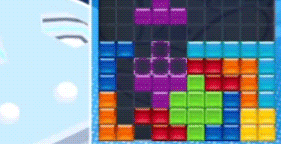
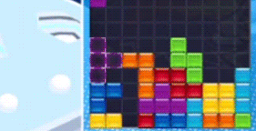